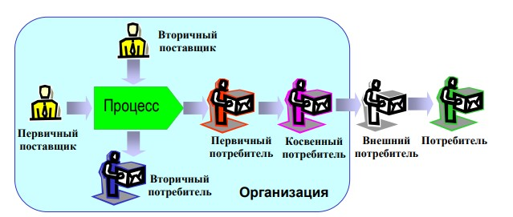

CASE-средства
Структурный анализ сложных систем требует компьютерной поддержки для автоматизации работы аналитиков. Таким средством служат CASE‑средства (Computer Aided Software Engineering).
Большинство CASE –средств основано на парадигме – «Методология – Модель – Нотация - Средства».
Дадим определения вышеперечисленным компонентам:
- Методология – учение о структуре, логической организации, методах и средствах деятельности в области структурного анализа. Она определяет основные принципы и приемы использования моделей.
- Модели – это совокупность символов (математических, графических и т.п.), их свойств, атрибутов и отношений между ними, которая адекватно описывает некоторые свойства моделируемого объекта.
- Нотации – система условных обозначений, принятая в используемой модели.
- Средства – аппаратное и программное обеспечение, реализующее выбранные методологию, модели и нотации.
К характеристикам CASE-средств относятся:
- мощные графические средства для описания и документирования ИС, обеспечивающие удобный интерфейс с разработчиком и развивающие его творческие возможности;
- интеграция отдельных компонент CASE-средств, обеспечивающая управляемость процессом разработки информационной системы;
- использование специальным образом организованного хранилища проектных метаданных (репозитория).
Интегрированное CASE-средство (или комплекс средств, поддерживающих полный жизненный цикл ПО) содержит следующие компоненты:
- Репозиторий — основа CASE‑средства: хранит версии проекта, синхронизирует данные при групповой разработке, контролирует полноту и непротиворечивость метаданных.
- Графические средства анализа и проектирования для создания и редактирования иерархических диаграмм (DFD, ERD и др.), формирующих модель ИС.
- средства разработки приложений, включая языки 4GL и генераторы кодов;
- средства конфигурационного управления;
- средства документирования;
- средства тестирования;
- средства управления проектом;
- средства реинжиниринга.
На сегодняшний день наиболее распространенными CASE-средствами в России являются:
- ARIS;
- AllFusion Modeling Suite;
- Silverrun;
- CASE.Аналитик и др.
